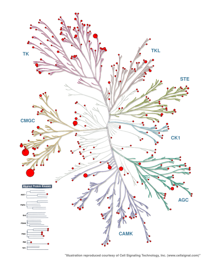
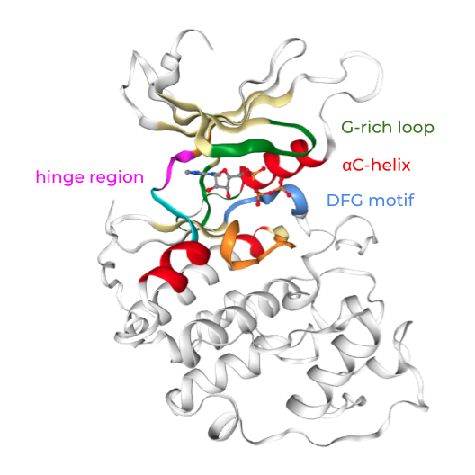
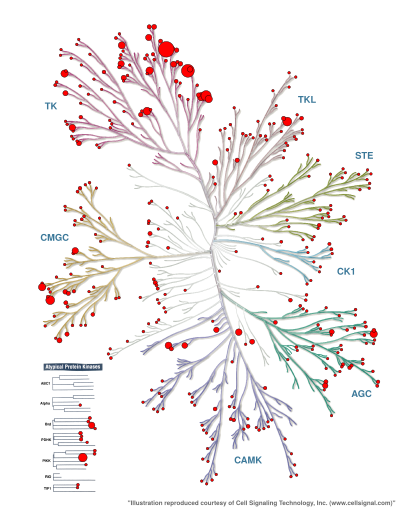
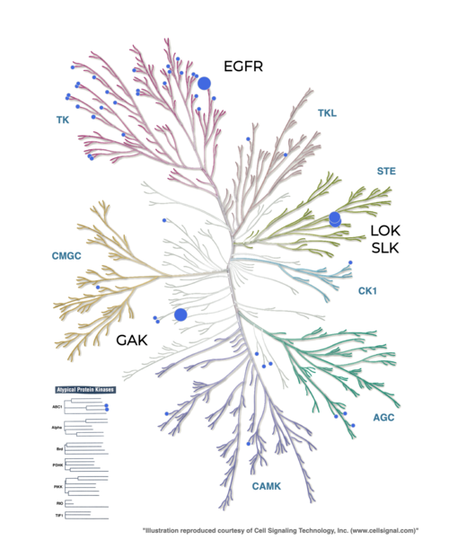
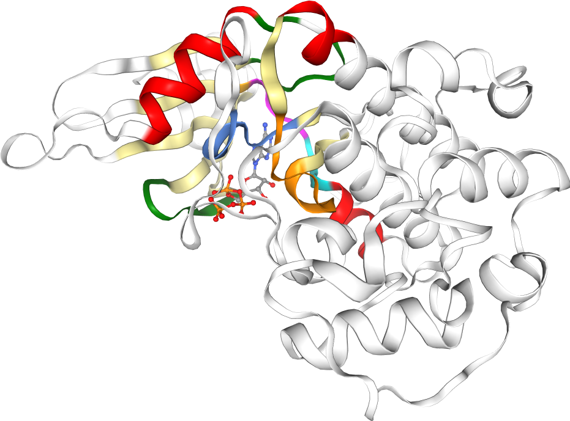

T023 · 什么是激酶？¶
注： 本教程是 TeachOpenCADD 的一部分。TeachOpenCADD 是一个旨在教授领域专用技能，并提供可作为研究项目起点的流程模板的平台。
作者：
Dominique Sydow, 2021, Volkamer 实验室, Charité
Talia B. Kimber, 2021, Volkamer 实验室, Charité
Jaime Rodríguez-Guerra, 2021, Volkamer 实验室, Charité
Andrea Volkamer, 2021, Volkamer 实验室, Charité
本教程的目标¶
在本教程中，我们将讨论激酶：它们为什么在生命和药物设计中如此重要，它们长什么样，以及有哪些数据资源可用？
最后，我们选择一组激酶，这些激酶将在后续教程（T024-T028）中进行不同角度的相似性分析。
理论 部分内容¶
激酶简介
人类激酶组
激酶结构和重要基序
激酶资源
激酶结构及相关信息
生物活性数据
激酶相似性：脱靶效应和混杂结合
实践 部分内容¶
定义目标激酶
参考文献¶
基于序列的激酶聚类：Manning et al. Science (2002), 298(5600), 1912-1934
关于激酶相似性和选择性的综述：Molecules (2021), 26(3), 629
[1]:
import sys
if "google.colab" in sys.modules:
%pip install teachopencadd --no-deps -q
!teachopencadd -d 23
%pip uninstall teachopencadd -y -q
%pip install -qr requirements.txt
理论¶
激酶简介¶
激酶是抗击癌症和炎症性疾病的既定药物靶点（Nat. Rev. Drug Discov. (2021), 20(7), 551-569）。它们通过磷酸化蛋白质底物参与细胞生活的大部分方面。激酶负责将 ATP 的末端磷酸基团转移到其底物蛋白的特定丝氨酸、苏氨酸或酪氨酸残基上。活性的失调可能通过过度激活生长刺激信号而导致癌症；因此，许多激酶抑制剂已被批准为上市药物或正处于临床试验阶段。
人类激酶组¶
人类激酶组由超过 500 种蛋白激酶组成，但这个数量可能因数据资源而异（参见 Kinodata 概览）。激酶根据其催化结构域的序列相似性分为九个组（图 1）。在本教程中，我们将介绍 TK（酪氨酸激酶）和 TKL（酪氨酸激酶样激酶）组中的一些激酶，这些组与 AGC、CAMK、CK1、CMGC、RGC、STE 和 atypical 组一起构成了人类激酶组。

图 1：激酶组树：激酶根据其序列相似性进行分组。图片改编自 Manning et al., Science (2002)。
激酶结构和重要基序¶
激酶序列和结构是高度保守的。激酶口袋中的重要区域包括（见图 2）：
铰链区（Hinge region）：与配体形成关键的氢键。
DFG 基序：根据侧链构象在苯丙氨酸和天冬氨酸之间翻转（DFG-in 和 DFG-out）。
αC 螺旋：在活性（螺旋-in）和非活性（螺旋-out）状态之间转换。

图 2：CDK2 激酶结构（黄色为 P-loop，红色为 αC-螺旋，蓝色为铰链区，绿色为 DFG 基序，橙色为 A-loop）。图片由 Dominique Sydow 提供。
激酶资源¶
对这个蛋白质家族的关注导致了大量关于化合物、生物活性和结构的免费可用数据，这些数据被用于计算药物开发（Annual Reports in Medicinal Chemistry 50 (2017)）。以下是一些通常用于激酶数据的数据库：
PDB（蛋白质结构）
KLIFS（激酶结构，结合口袋定义和相互作用指纹）
ChEMBL（生物活性数据）
KinMap（激酶组树可视化）
图 3：一些重要的激酶相关数据资源在以下三个层面运作：结构数据（PDB 和 KLIFS）、生物活性数据（ChEMBL）和可视化（KinMap）。PDB 是一种蛋白质结构数据库；KLIFS 是一种激酶特定结构数据库，提供关于激酶口袋的详细信息，包括相互作用指纹；ChEMBL 包含配体及其靶标的生物活性数据；KinMap 提供了将任何激酶相关数据映射到激酶组树上的可能性。
激酶结构及相关信息：KLIFS¶
KLIFS 数据库（Nucleic Acid Res. (2020), 49(D1), D562-D569、J. Med. Chem. (2014), 57(2), 249-277）获取沉积在 PDB 中的所有激酶结构，并进行后处理（例如，注释激酶特定号码（KLIFS 口袋残基编号，见 教程 T024）、计算相互作用指纹（教程 T026）等）。
在 KLIFS 中，每个结构、激酶和配体都与一个标识符关联（我们将在后续教程中经常使用这些标识符）：
结构 KLIFS ID
激酶 KLIFS ID
配体 KLIFS ID
KLIFS 不仅包含激酶结构及其口袋定义（用于 教程 T024 和 T025），还包含许多结构、激酶和/或配体相关的数据：
相互作用指纹（用于 教程 T026）
结构质量数据（分辨率、释放日期等）
基于序列的激酶分类（激酶组、家族等）
结合相互作用（Ki、IC50、pIC50 等）
有关更多信息，请参阅 KLIFS 网站。
生物活性数据¶
ChEMBL 是一个众所周知的生物活性数据库，它会不时发布更新版本。截至 2021 年 9 月，该数据库中存储了超过 200 万个化合物和 14,000 个靶点。在 ChEMBL29 中，有超过 160,000 条关于激酶的测量数据（参见图 4）。
kinodataGitHub 仓库：https://github.com/openkinome/kinodatakinodataChEMBL29 发布版：https://github.com/openkinome/kinodata/releases/tag/v0.3（activities-chembl29_v0.3.zip）
与其他数据类型一样，生物活性数据在不同人类激酶之间的覆盖范围非常不均衡，这取决于对某些激酶的研究投入程度。

图 4：使用 KinMap 将每个激酶的 ChEMBL29 生物活性数量映射到 Manning 激酶组树上。请参阅附录了解如何生成此 KinMap 树。
然而，ChEMBL 并不是唯一可用的生物活性数据库。以下是非详尽的可用激酶分析数据集列表。
Karaman et al. 数据集
317 种激酶 × 38 种化合物的相互作用组图谱
Davis et al. 数据集
385 种激酶 × 72 种化合物相互作用组图谱
Metz et al. 数据集
100 种激酶 × 150 种化合物
OpenKinome 项目收集的数据集
网站：Kinodata
已发表的激酶分析数据集的收集
激酶相似性：脱靶效应和混杂结合¶
如前所述，激酶是高度保守的，尤其是在它们的结合位点中。这种高度的相似性是药物设计中的一个挑战，因为配体可能不仅与其预期的靶标（on-target）形成相似的结合模式，还会与其他靶标（off-target）形成，从而导致脱靶效应。这种混杂的结合可能引起轻度到严重的副作用。
预测这些副作用并非易事，因为某些脱靶靶点并不明显。例如，EGFR 抑制剂 Erlotinib 对序列高度相似的 TK 激酶组中的其他激酶也表现出亲和力。然而，它还强烈影响更远缘激酶组中的脱靶靶点 GAK、LOK 和 SLK（图 5）。

图 5：EGFR 抑制剂 Erlotinib 对 Karaman et al. 数据集的分析数据（Nature Biotechnology (2008), 26, 127-132），使用 KinMap 映射到 Manning 激酶组树上。请参阅本 notebook 的附录了解如何生成此图。
在接下来的四个教程（即 教程 T024-T027）中，我们将从不同角度评估激酶相似性，并在 教程 T028 中对它们进行比较：
教程 T024：基于 KLIFS 口袋序列的激酶相似性
教程 T025：基于 KLIFS 结构 KC 分数的激酶相似性（Kissim）
教程 T026：基于 KLIFS 相互作用指纹的激酶相似性
教程 T027：基于 ChEMBL 配体谱的激酶相似性
教程 T028：激酶相似性视角比较
激酶数据集编制¶
在激酶相似性教程系列（教程 T024-T028）中，我们将使用来自 Molecules (2021), 26(3), 629 发表研究中的九种激酶，选择这些激酶基于以下原因：
EGFR 和 ErbB2/HER2：重要的抗癌药物靶点，两者都属于同一蛋白质家族（ErbB 家族）。
CDK2 和 CDK4：重要的抗癌药物靶点，两者都是细胞周期蛋白依赖性激酶。
AurA 和 AurB：有丝分裂过程的调节因子，两者都是 Aurora 激酶。
IGF1R 和 INSR：代谢过程的调节因子，具有高度同源的激酶结构域。
p38α：丝裂原活化蛋白激酶（MAPK）信号通路的调节因子。
图 4 展示了这些激酶在激酶组树中的位置。所选激酶（带有相应激酶组别背景颜色）覆盖了多个不同的组（TK 中的 EGFR/ErbB2/IGF1R/INSR，CMGC 中的 CDK2/CDK4/p38α，以及 Others 中的 AurA/AurB）。在序列相似性方面，我们预期同一亚家族的激酶（例如 EGFR/ErbB2 或 CDK2/CDK4）在高相似性水平下聚类在一起。相反，属于不太相关激酶组的激酶预计具有较低的相似性。
图 4：所选激酶（颜色编码）在激酶组树中的位置。有关所选激酶的更多信息，请参见表 1。
实践¶
[2]:
from pathlib import Path
import pandas as pd
[3]:
HERE = Path(_dh[-1])
DATA = HERE / "data"
定义目标激酶¶
我们已将关于这九种激酶的信息收集在 CSV 文件 T023_what_is_a_kinase/data/kinase_selection.csv 中：
kinase：激酶名称，与 Molecules (2021), 26(3), 629 中使用的名称一致kinase_klifs：激酶的 KLIFS 名称kinase_family：激酶所属家族kinase_group：激酶所属组别uniprot_id：UniProt 标识符
[4]:
kinase_selection_df = pd.read_csv(DATA / "kinase_selection.csv")
kinase_selection_df
# NBVAL_CHECK_OUTPUT
[4]:
| kinase | kinase_klifs | uniprot_id | group | full_kinase_name | |
|---|---|---|---|---|---|
| 0 | EGFR | EGFR | P00533 | TK | Epidermal growth factor receptor |
| 1 | ErbB2 | ErbB2 | P04626 | TK | Erythroblastic leukemia viral oncogene homolog 2 |
| 2 | PI3K | p110a | P42336 | Atypical | Phosphatidylinositol-3-kinase |
| 3 | VEGFR2 | KDR | P35968 | TK | Vascular endothelial growth factor receptor 2 |
| 4 | BRAF | BRAF | P15056 | TKL | Rapidly accelerated fibrosarcoma isoform B |
| 5 | CDK2 | CDK2 | P24941 | CMGC | Cyclic-dependent kinase 2 |
| 6 | LCK | LCK | P06239 | TK | Lymphocyte-specific protein tyrosine kinase |
| 7 | MET | MET | P08581 | TK | Mesenchymal-epithelial transition factor |
| 8 | p38a | p38a | Q16539 | CMGC | p38 mitogen activated protein kinase alpha |
我们将在所有后续教程中加载此数据集，从不同角度评估激酶相似性。
注意：您可以使用自己的一组激酶运行激酶相似性 教程 T024-T028。为此，请更新以下文件：
使用您的激酶更新
T023_what_is_a_kinase/data/kinase_selection.csv文件；唯一必需的列是kinase和kinase_klifs。可选：如果某个激酶在 KLIFS 中不存在，请在 KLIFS 反馈表 中提交新的激酶结构，或者如果由 KLIFS 分配的激酶名称与数据库中的不同，请调整
kinase_klifs。
[5]:
pd.options.display.max_colwidth = None
configs = pd.read_csv(DATA / "pipeline_configs.csv")
configs
[5]:
| variable | default_value | description | |
|---|---|---|---|
| 0 | DEMO | 1 | Run the notebooks exactly as displayed online (default: 1) or set to 0 and run your own kinase set (as defined in `kinase_selection.csv`) |
| 1 | N_STRUCTURES_PER_KINASE | -1 | Run structure-based notebooks on all structures per kinase (default: -1) or a subset of structures (replace -1 with e.g. 3) |
| 2 | N_CORES | 1 | Run T025 on one (default: 1) or more cores |
附录¶
KinMap 数据¶
本 notebook 中展示了一些 KinMap 树。以下代码生成用于上传到 KinMap 的 KinMap CSV 文件：http://www.kinhub.org/kinmap。
注意：
PNG 下载似乎已不再有效，因此请下载为 SVG 格式，然后使用 Safari 或其他浏览器打开 SVG 文件，以进一步编辑或导出为其他格式（例如 PDF）。
CSV 文件应保存到
T023 目录，以便通过引用上传；此外，CSV 文件之间由空行分隔。
[6]:
def format_for_kinmap(kinase_names, kinase_values, size_min=10, size_max=50):
"""
给定激酶名称和一些关联值，生成 KinMap 数据文件，该文件将以 [`size_min`, `size_max`] 尺寸的圆圈显示这些值。
Parameters
----------
kinase_names : list of str
Kinase names.
kinase_values : list of float
Some associated values, such as the number of bioactivites.
size_min : int
Minimum circle size on KinMap tree (minimum input value will be scaled to `size_min`).
size_max : int
Maximum circle size on KinMap tree (maximum input value will be scaled to `size_min`).
Returns
-------
pandas.DataFrame
KinMap data with columns `xName` (kinase name), `size` (circle size for KinMap tree).
"""
data = pd.DataFrame({"xName": kinase_names, "values": kinase_values})
min_ = data["values"].min()
max_ = data["values"].max()
data["size"] = data["values"].apply(
lambda x: ((x - min_) / (max_ - min_) * size_max) + size_min
)
return data[["xName", "size"]]
每个激酶的 PDB 结构数量¶
生成每个激酶的结构数量，以 KinMap 格式映射到激酶组树上。
[7]:
from opencadd.databases.klifs import setup_remote
klifs = setup_remote()
structures_df = klifs.structures.all_structures()
# 获取每个激酶的结构数量
n_structures_per_kinase = (
structures_df.groupby(["structure.pdb_id", "kinase.klifs_name"])
.first()
.reset_index()
.groupby("kinase.klifs_name")
.size()
)
# Save in KinMap format
kinmap_n_structures_per_kinase = format_for_kinmap(
n_structures_per_kinase.index, n_structures_per_kinase.values
)
kinmap_n_structures_per_kinase.to_csv(DATA / "kinmap_n_structures_per_kinase.csv", index=None)
# Some kinases will not be resolved in KinMap and will be simply dropped
识别具有最多结构的激酶。
[8]:
kinmap_n_structures_per_kinase.iloc[n_structures_per_kinase.argmax()].xName, max(
n_structures_per_kinase
)
[8]:
('CDK2', 457)
每个激酶的 ChEMBL 生物活性数量¶
生成每个激酶的 ChEMBL 生物活性数量，以 KinMap 格式映射到激酶组树上。
注意：以下单元格的执行需要几秒钟。
[9]:
from opencadd.databases.klifs import setup_remote
# 获取生物活性数据
path = "https://github.com/openkinome/kinodata/releases/download/v0.3/activities-chembl29_v0.3.zip"
data = pd.read_csv(path, index_col=None)
data = data[data["activities.standard_type"] == "pIC50"]
data = data.dropna()
# Get kinase data
klifs = setup_remote()
kinases_df = klifs.kinases.all_kinases()
kinases_df = kinases_df[kinases_df["kinase.uniprot"] != "0"]
# Some UniProt IDs have several names in KLIFS, keep only first
kinases_df = kinases_df.groupby("kinase.uniprot").first()
# Map UniProt ID > kinase KLIFS name
data = pd.merge(data, kinases_df, left_on="UniprotID", right_on="kinase.uniprot", how="left")
# Get number of activities per kinase
n_activities_per_kinase = data.groupby("kinase.klifs_name").size()
# Save in KinMap format
kinmap_n_activities_per_kinase = format_for_kinmap(
n_activities_per_kinase.index, n_activities_per_kinase.values
)
kinmap_n_activities_per_kinase.to_csv(DATA / "kinmap_n_activities_per_kinase.csv", index=None)
# Some kinases will not be resolved in KinMap and will be simply dropped
Karaman et al. 数据集的 Erlotinib 分析数据¶
选择”Data Source”（数据源）：Profiling
选择”Data type”（数据类型）：Karaman et al., 2018
选择 “Karaman et al., 2018”：Erlotinib
点击 “Add source”（添加源）
在 设置 菜单中，将颜色映射更改为（例如）红色
使用 opencadd 进行激酶结构可视化¶
我们使用 KLIFS ID 为 4367 的 ATP 结合 CDK2 结构作为示例。
[10]:
from opencadd.structure.pocket import PocketKlifs, PocketViewer
# Get structure and pocket
pocket = PocketKlifs.from_structure_klifs_id(4367)
# Show pocket
viewer = PocketViewer()
viewer.add_pocket(pocket, ligand_expo_id="ATP", show_pocket_center=False)
viewer.viewer.add_ball_and_stick(selection="ATP")
viewer.viewer
[11]:
viewer.viewer.render_image(trim=True, factor=2);
[13]:
viewer.viewer._display_image()
[13]:

[ ]: